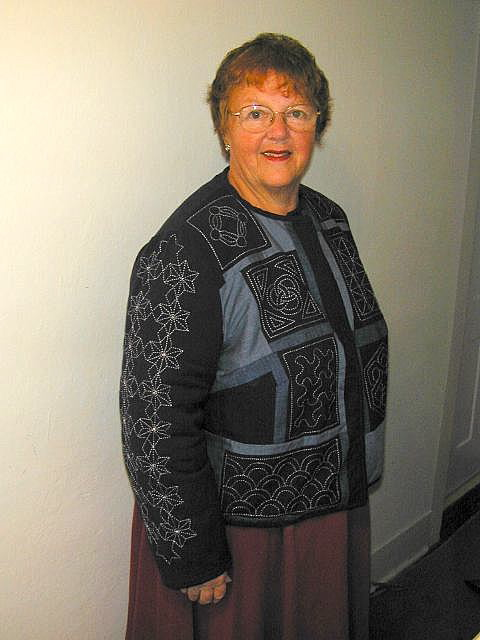

<--Previous Up Next-->

Japanese jacket
This jacket was made in anticipation of a trip to Japan as a study project in the technique of sashiko. Sashiko is a traditional Japanese technique using the same running stitch used in hand quilting in the US and is traditionally done on indigo dyed homespun which I combined with other blues as I created the jacket. The design of the jacket is my own, both in the choice and placement of fabrics and quilting. Finding the basic fabric, indigo dyed homespun, was the hardest part of the project despite the popularity of homespuns for the "country" look. Some of the patterns look like those used in US quilting; others are unique to the Japanese style. The books I used for instruction and inspiration were "The Classic Quilting of Sashiko from Ondori" and
"Sashiko:Traditional Japanese Quilt Design from Nihon Vogue".